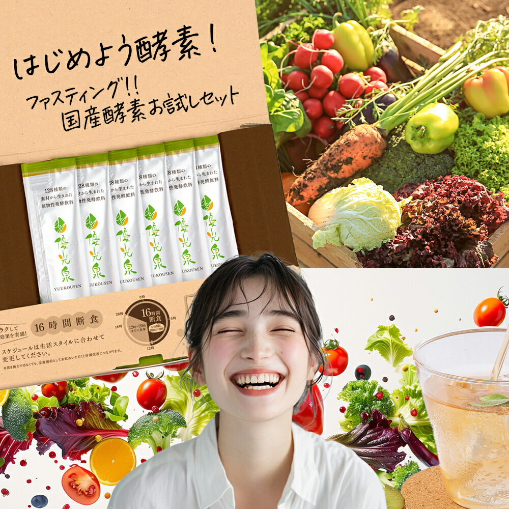
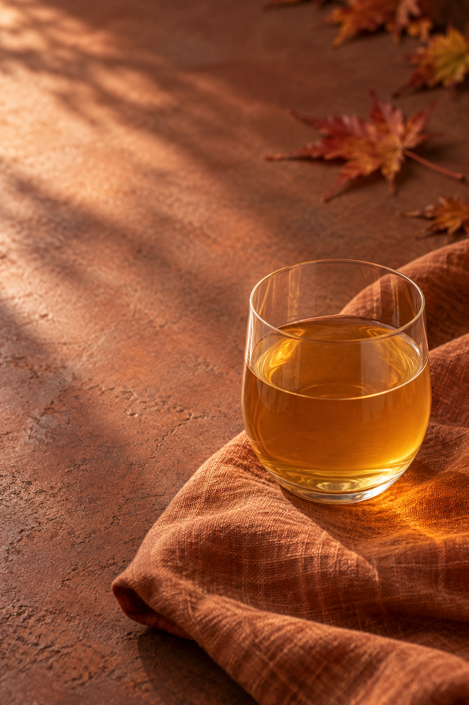
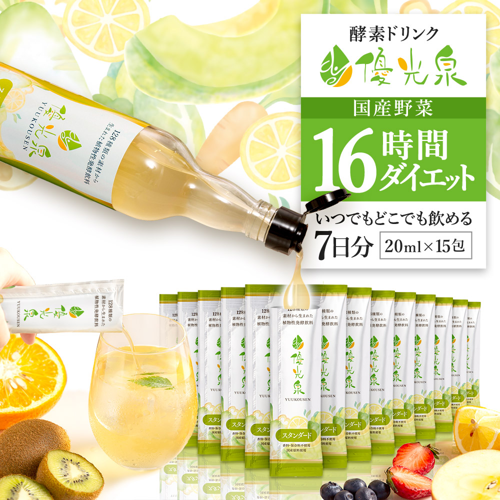
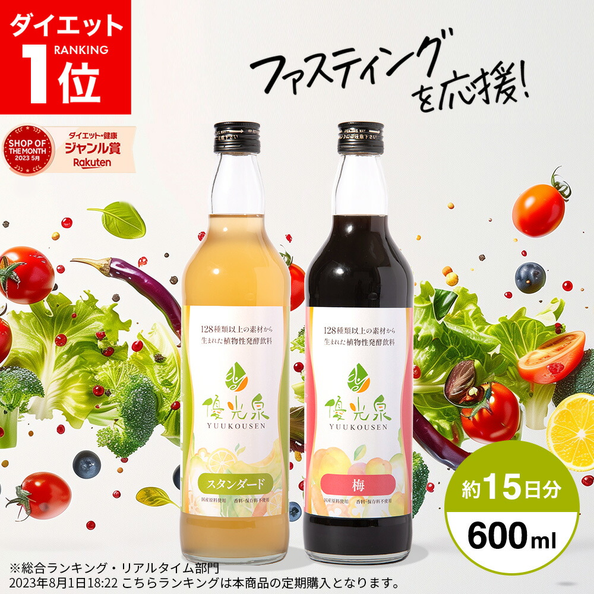

はじめての
優光泉に
優光泉に


YUKOUSEN / AUTUMN SPECIAL
おいしい季節を、わたしらしく。
秋を楽しむ。
自分の食生活にも、少し目を向ける。
そんなきっかけを、優光泉と。
おいしい秋も、自分のことも。
旬のごはんに、秋のおやつ。
楽しみが増える季節だからこそ、
いつもの食生活を振り返ってみませんか。
まずは味を試すところから。
暮らしに合う形で、優光泉を選んでみましょう。
FIND YOUR YUKOUSEN
はじめ方は、ひとつじゃない。



価格・送料・クーポン・販売条件は、各商品ページでご確認ください。
YOUR FAVORITE TASTE
定番の味も、気になっていた味も。
5種類から、わたしのお気に入りを。
タイプによって選べる味・セット内容は異なります。各商品ページでご確認ください。
ABOUT YUKOUSEN
優光泉は、ファスティング施設での経験をもとに開発された植物性発酵飲料。素材や味わいにこだわった一杯を、お届けします。
BEFORE YOU START
味が気になる方には6包のお試し、携帯したい方には個包装、自宅で飲みたい方にはボトルがおすすめです。味やセット内容は商品ページで確認できます。
ボトルは計量して好みの濃さに調整しやすく、個包装は1包ずつ使えて持ち歩きに便利です。飲み方は各商品の案内に従ってください。
実施方法や準備・回復食については、ショップの解説をご確認ください。無理な食事制限は避け、体調に不安がある方は事前に医師に相談してください。
ショップの案内を確認するA LITTLE MOMENT FOR YOU